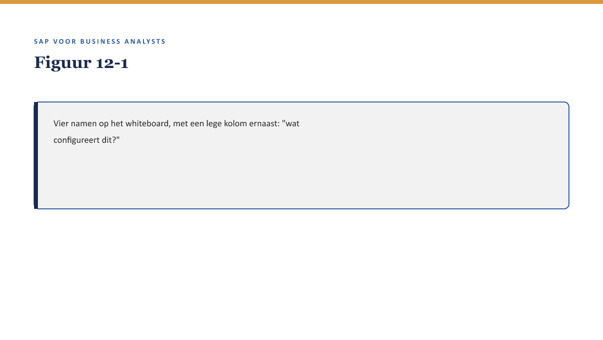

Cursus SAP voor Business Analysts · Niveau 2 (Professional) · Deel 12 van 30
FS-PM: configuratie en rolverdeling
Priya legt Sanne vier termen voor die telkens terugkomen zodra een BTX-wens concreet wordt: Product Engine, TMF, BRFplus, BTS. “Voor elke wens die je hebt,” zegt Priya, “is de eerste vraag niet ‘kan dit’, maar ‘in welke van deze vier hoort dit thuis’.”
10secties
±27minleestijd + werkboek
6werkboekopdrachten
2figuren
Positionering. Deze Ductus-opleiding leert business analisten SAP zelfstandig lezen en beoordelen in een SAP-implementatietraject — geen configuratie- of programmeercursus, wel de vaardigheid om een consultant en ontwikkelaar te kunnen tegenspreken. Dit materiaal is onafhankelijk ontwikkeld door Ductus B.V. en niet gelieerd aan of goedgekeurd door SAP SE.
Niveau 2: Deel 11 — FS-PM: het polisproces → Deel 12 — FS-PM: configuratie en rolverdeling (hier) → Deel 13 — FS-CM: het schadeproces I → Deel 14 — FS-CM: het schadeproces II → Deel 15 — De financiële schaduw van elk proces → Deel 16 — Documenten & documentflow → Deel 17 — Organisatiestructuur & determinatie → Deel 18 — Status, berichten & output → Deel 19 — Case: Order-to-Cash ontleed → Deel 20 — Case: Claims-to-Payment ontleed → Deel 21 — Ketenintegratie: polis, claim en financiën samen → Deel 22 — Examentraining + capstone
01
Leerdoelen
⏱ 3 min
Na dit deel kun je:
de vier kernspelers van FS-PM-configuratie benoemen: Product Engine, TMF, BRFplus, BTS;
per speler globaal aangeven wat hij configureert en wat een BA daarvan moet kunnen beoordelen;
beargumenteren welke van deze spelers dichter bij customizing en welke dichter bij development liggen (↗ deel 6);
een BTX-gerelateerde wens (↗ deel 11) koppelen aan de speler waar hij waarschijnlijk wordt ingericht;
de historische kortingsregel (niveau 1) opnieuw beoordelen met dit vocabulaire.
Studielast: één dagdeel klassikaal, circa drie uur zelfstudie.
02
Vier namen, één vraag
⏱ 3 min
Priya legt Sanne vier termen voor die telkens terugkomen zodra een BTX-wens concreet wordt: Product Engine, TMF, BRFplus, BTS. “Voor elke wens die je hebt,” zegt Priya, “is de eerste vraag niet ‘kan dit’, maar ‘in welke van deze vier hoort dit thuis’.”

Figuur 12-1 — Vier namen op het whiteboard, met een lege kolom ernaast: "wat configureert dit?"
03
Waarom dit voor de BA telt
⏱ 3 min
Waarom dit voor de BA telt
Je hoeft deze vier componenten niet zelf te kunnen bedienen. Wel moet je, wanneer een consultant zegt “dit richten we in via BRFplus”, kunnen inschatten wat voor soort logica dat betekent — en dus wat voor soort vraag jij daarover kunt stellen.
04
De vier spelers
⏱ 3 min
Product Engine — waar producten worden gedefinieerd
De Product Engine is waar productvarianten en hun kenmerken worden vastgelegd: de bouwstenen waaruit een polis wordt samengesteld. Dit is de plek die het dichtst bij Sannes oorspronkelijke twaalf productvarianten (deel 1, niveau 1) ligt — waar een variant zijn dekkingsregels, premiestructuur en voorwaarden krijgt.
TMF (Tariff and Master Data Framework) — waar tarieven en stamgegevens samenkomen
TMF koppelt productdefinities aan tarieven en aan stamgegevens (↗ deel 4, niveau 1): het bepaalt hoe een premie wordt berekend op basis van kenmerken van de polis en de polishouder.
BRFplus (Business Rule Framework plus) — waar bedrijfsregels worden vastgelegd
BRFplus is een generiek regelmotor-mechanisme waarmee bedrijfsregels (condities zoals in deel 5, maar dan configureerbaar in plaats van in code) worden vastgelegd zonder te programmeren. Dit is precies de plek waar de historische kortingsregel uit niveau 1 idealiter thuishoort — in plaats van in custom ABAP-code (deel 5).
BTS (Business Transaction Services) — waar BTX-verwerking wordt aangestuurd
BTS stuurt de daadwerkelijke verwerking van een BTX aan: welke stappen worden doorlopen, welke validaties gelden, in welke volgorde.
Figuur 12-2 — De vier spelers als lagen: Product Engine (wat bestaat er), TMF (wat kost het), BRFplus (welke regels gelden), BTS (hoe wordt een BTX verwerkt).
Kernzin
Deze vier namen zijn minder belangrijk om te onthouden dan het patroon erachter: definitie, tarief, regel, verwerking zijn vier aparte lagen, en een wens hoort meestal bij precies één daarvan thuis — zelden bij alle vier tegelijk.
05
Waar op de schuifbalk (deel 6)?
⏱ 3 min
Van de vier spelers ligt BRFplus doorgaans het dichtst bij pure customizing — regels vastleggen zonder te programmeren, ook al vergt het een zekere vaardigheid. Product Engine en TMF zitten meestal ook in het customizing-domein, met uitzonderingen die richting het grijze midden bewegen. BTS-aanpassingen liggen vaker richting development, omdat verwerkingslogica raakt aan hoe het systeem intern een BTX afhandelt.
Kernzin
De historische kortingsregel die in niveau 1 nog “verstopt in custom code” zat, hoort — als het aan de configuratie-kant van FS-PM ligt — waarschijnlijk in BRFplus thuis. Dat is precies de reden waarom niemand hem meer kon uitleggen: hij was niet daar ondergebracht waar hij hoorde.
06
Toegepast op een nieuwe wens
⏱ 3 min
Marijke de Groot vraagt om een nieuwe premiekorting bij een specifieke combinatie van productvariant en werkgeversgrootte. Sanne kan nu, met de vier spelers, een gerichte vraag stellen: “Is dit een nieuwe tariefregel (TMF), een aparte bedrijfsregel (BRFplus), of allebei — en waarom?” In plaats van, zoals in niveau 1, alleen “past dit binnen standaard” te vragen.
07
Kruisverwijzingen
⏱ 3 min
↗ Deel 5-6, niveau 1: het onderscheid customizing/development, hier toegepast op vier specifieke FS-PM-componenten.
↗ Deel 13-14 (FS-CM): een vergelijkbare, symmetrische structuur voor het schadeproces.
08
Kernbegrippen
⏱ 3 min
Product Engine · TMF (Tariff and Master Data Framework) · BRFplus · BTS (Business Transaction Services)
09
Samenvatting in vijf zinnen
⏱ 3 min
Vier spelers vormen samen FS-PM-configuratie: Product Engine (definitie), TMF (tarief), BRFplus (regels), BTS (verwerking).
Elk vormt een aparte laag; een wens hoort meestal bij precies één van de vier thuis.
BRFplus ligt doorgaans het dichtst bij pure customizing; BTS-aanpassingen liggen vaker richting development.
De historische kortingsregel uit niveau 1 hoorde waarschijnlijk in BRFplus thuis — vandaar dat hij “verdween” toen hij als custom code werd gebouwd.
Een BA kan met dit vocabulaire een wens gericht toewijzen aan de juiste laag, in plaats van alleen “past dit” te vragen.
10
Werkboek — opdrachten
⏱ 5 min
Vijf opdrachten en een oefentoets van tien vragen.
Werkboekopdrachten
Uit Werkboek deel 12, letterlijk overgenomen (inclusief uitwerkingen)
a. Een nieuwe productvariant met eigen dekkingsregels wordt gedefinieerd. b. Een premie wordt berekend op basis van leeftijd en verzekerd bedrag. c. Een regel bepaalt dat bij twee gelijktijdige mutaties de meest recente wint. d. De volgorde van validatiestappen bij een nieuwe polisaanvraag wordt vastgelegd.
Van de vier spelers: welke ligt gemiddeld het dichtst bij pure customizing, en welke het dichtst bij development?
✓UitwerkingToon antwoord
BRFplus meestal het dichtst bij customizing; BTS-aanpassingen vaker richting development (reader §4).
Opdracht 12.3 — De historische kortingsregel herzien (20 min, groepjes van drie)
Herlees deel 5 (niveau 1), de historische kortingsregel in custom code. Beargumenteer waarom BRFplus waarschijnlijk een betere plek was geweest, en wat daarmee gewonnen was.
✓UitwerkingToon antwoord
BRFplus maakt een regel zichtbaar en direct aanpasbaar voor wie toegang heeft tot de configuratie, zonder een ontwikkelaar erbij te hoeven halen — en daarmee minder snel “vergeten” (↗ deel 6 §4.2). Was de regel in BRFplus vastgelegd, dan had iemand haar waarschijnlijk eerder gezien en bevraagd, zoals de reader in §4 beargumenteert.
Opdracht 12.4 — Marijkes nieuwe wens (15 min, individueel)
Formuleer, zoals in reader §5, de gerichte vraag die Sanne aan Priya zou stellen over Marijkes nieuwe premiekorting-wens.
✓UitwerkingToon antwoord
Bijvoorbeeld: “Is dit een nieuwe tariefregel die in TMF thuishoort, een aparte bedrijfsregel voor BRFplus, of allebei — en als het allebei is, welke van de twee is dan leidend?”
Opdracht 12.5 — Je eigen indeling (10 min, individueel, huiswerk)
Bedenk een fictieve FS-PM-wens en wijs haar toe aan één van de vier spelers, met argumentatie.
✓Uitwerking — begeleidingsnotitieToon antwoord
Geen vast antwoord; bespreek kort in de volgende sessie.
Oefentoets — tien vragen
1. Wat definieert de Product Engine? A. Tarieven. B. Productvarianten en hun kenmerken. C. Bedrijfsregels. D. BTX-verwerkingsstappen.
2. Wat doet TMF? A. Het definieert nieuwe producten. B. Het koppelt productdefinities aan tarieven en stamgegevens. C. Het stuurt verwerking aan. D. Het is een testtool.
3. Wat is BRFplus? A. Een testframework. B. Een generiek regelmotor-mechanisme voor bedrijfsregels. C. Een rapportagetool. D. Een type tabel.
4. Wat doet BTS? A. Het definieert tarieven. B. Het stuurt de verwerking van een BTX aan. C. Het beheert stamgegevens. D. Het is een foutmelding.
5. Welke speler ligt doorgaans het dichtst bij pure customizing? A. BTS. B. BRFplus. C. Product Engine altijd. D. Geen van vieren.
6. Waarom hoorde de historische kortingsregel waarschijnlijk in BRFplus thuis? A. Omdat BRFplus sneller is. B. Omdat het een bedrijfsregel is die zichtbaarder en aanpasbaarder was geweest dan in custom code. C. Omdat custom code niet bestaat in FS-PM. D. Er is geen verband.
7. Wat is het patroon achter de vier spelers, volgens de kernzin in reader §3.4? A. Ze zijn allemaal hetzelfde. B. Definitie, tarief, regel, verwerking zijn vier aparte lagen. C. Ze vervangen elkaar. D. Alleen BTS is relevant voor een BA.
8. Hoeveel van de vier spelers is een wens meestal toe te wijzen? A. Alle vier tegelijk. B. Meestal precies één. C. Nooit één. D. Willekeurig.
9. Wat is de eerste vraag die een BA stelt bij een nieuwe FS-PM-wens, volgens dit deel? A. Wat kost dit? B. In welke van de vier spelers hoort dit thuis? C. Wie heeft dit bedacht? D. Is dit een BTX?
10. Wat is het verband tussen dit deel en deel 6 (niveau 1)? A. Geen verband. B. De schuifbalk customizing/development wordt hier toegepast op vier specifieke componenten. C. Dit deel vervangt deel 6 volledig. D. BRFplus is hetzelfde als een BAdI.
✓AntwoordenToon antwoord
1B 2B 3B 4B 5B 6B 7B 8B 9B 10B
Verder naar deel 13
Deel 13 — FS-CM: het schadeproces I — bouwt voort op wat hier is behandeld.